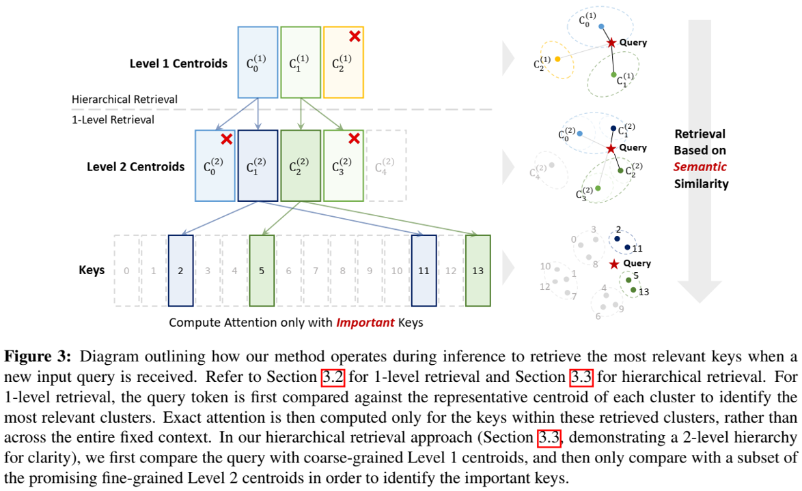

论文阅读二十四：Squeezed Attention：加速长上下文长度LLM推理
摘要
新兴的大型语言模型（LLM）应用程序需要长输入提示，以便执行复杂的下游任务，如文档分析和代码生成。对于这些长上下文长度的应用程序，输入提示的长度在推理效率方面构成了重大挑战，因为推理成本随序列长度呈线性增加。然而，对于许多这些应用程序，提示中的大部分上下文在不同的用户输入之间是固定的，从而提供了在接收用户输入时执行离线优化以快速处理用户输入的机会。在这项工作中，我们提出了一种机制来加速LLM应用程序，其中大部分输入提示是固定的。为了实现这一点，我们首先利用K-means离线聚类，根据语义相似性对固定上下文的键进行分组，并用单个质心值表示每个集群。在推理过程中，我们将用户输入的查询标记与质心进行比较，以预测固定上下文中的哪些键在语义上相关，需要在推理期间加载。然后，我们仅使用固定上下文中的这些重要键来计算精确注意力。该方法在保持模型准确性的同时，显著降低了带宽和计算成本，因为仅使用固定上下文标记的一个子集来计算精确的注意力。我们还扩展了我们的方法，使用分层质心查找来识别重要键，这可以将注意力的复杂性从线性降低到相对于固定上下文长度的对数。为了实现我们方法的效率优势，我们实现了优化的Triton内核，用于质心比较和稀疏FlashAttention，并使用重要键，在长上下文推理的预填充和生成阶段实现了4倍以上的加速。此外，我们在各种长上下文基准测试中广泛评估了我们的方法，包括LongBench，它在不损失准确性的情况下将KV缓存预算减少了3.1倍。对于允许精度下降较小的应用，我们可以实现高达8倍的降低，LLaMA-2-7B-32K、LWM-Text-Chat-1M和Longchat-7B-v1.5-32K型号的精度差距小于0.5点。我们的代码可在： https://github.com/SqueezeAILab/SqueezedAttention 。
引言
近年来，大型语言模型（LLMs）得到了快速发展，实现了一系列下游应用，包括文档问答（QA）和对结构化和非结构化文档的复杂分析。这些文档处理和分析任务的性能得益于较新的开源[26,40]和闭源[3,4,15]模型上下文长度的增加，因为这些任务受益于合并大量的输入上下文，以调节模型生成特定的输出。然而，下游应用程序的LLM部署受到推理成本的限制，LLM推理需要大量的计算资源以及内存容量和带宽。特别是，由于KV缓存的大小，长上下文长度应用程序具有较大的内存容量和内存带宽要求，KV缓存的尺寸相对于序列长度呈线性增加[39,17,24]。
对于许多应用程序，如上下文学习、文档QA和代码生成，在一系列提示中，很大一部分输入上下文是固定的。例如，输入上下文可能包含系统指令、文档、源代码，以及目标任务的特定少数场景示例。这个固定的上下文在连续的提示中重复使用，对于将模型定制到目标应用程序非常有益；然而，增加固定上下文的大小对推理效率提出了重大挑战。在整个工作中，我们将把提示的这一部分称为“固定上下文”，将与联机的用户请求相对应的部分称为”用户输入“。用户输入附加在固定上下文之后，并提供给模型。对于许多长上下文应用程序，提示的固定上下文部分比提示的用户输入部分长得多，并且该固定上下文部分的注意力计算通常主导推理运行时。在这项工作中，我们的目的是利用这样一个事实，即在推理之前，这个上下文是固定的且可用的。这使我们能够在处理传入的用户输入和生成输出时优化对这个固定上下文的关注。
为此，我们提出了一种通过加速注意力计算来加速固定上下文应用程序的方法——压缩注意力。如图1所示，我们的方法通过快速识别固定上下文中的哪些键对给定的查询标记很重要来加速推理。这种方法涉及两阶段算法。在第一阶段，我们根据键的语义相似性对固定上下文中的键进行离线聚类，然后使用单个代表性的”键质心“表示同一聚类中的键。这种离线聚类可以在推理过程中快速检索重要键（即与传入查询标记语义上最相关的键）。在第二阶段，当收到用户输入时，我们首先将查询标记与键质心进行比较，而不是与整个键集进行比较，以识别重要的键簇，从而检索重要的键。一旦识别出重要的集群，我们就会检索它们的相关的键，并仅使用那些高分键计算精确的注意力。我们的方法可以进一步扩展到分层聚类和检索方案，如图1所示，通过首先利用粗粒度聚类，然后使用细粒度聚类细化搜索，有效地缩小了搜索空间。正如我们稍后将在第3.4节中讨论的那样，这种方法可以将查找的内存和计算复杂度降低到相对于固定上下文长度的对数复杂度。
与现有的解决方案[46,24,14]不同，这些解决方案只识别一次不太重要的标记并在整个生成过程中丢弃它们，我们的方法动态地识别和检索与每个生成步骤语义相关的信息。这使得我们的方法能够保持生成质量，同时将从内存加载的KV缓存条目的数量减少多达8倍（包括加载键质心），如第6节所述。通过优化内存带宽和计算成本，SQUEEZED ATTENTION有效地降低了长上下文推理过程中生成和预填充的开销。具体来说，我们的工作对加速长上下文长度应用程序做出了以下贡献：
-
基于语义的键聚类和检索：为了根据非连续键的语义相似性对其进行聚类，我们离线执行K-means聚类，用单个“键质心”值表示每个集群内的所有键（第3.1节）。这使得在推理过程中能够进行高效检索，使我们能够通过将查询与键簇而不是整个键集进行比较来识别与查询标记语义上最相关的键（第3.2节）。由于键质心的数量明显小于键的总数，因此内存开销仍然很小。然后，仅使用检索到的键计算确切的注意力得分。我们还提出了我们方法的分层版本，它可以将每个标记生成的内存和计算复杂度从线性降低到相对于上下文长度的对数。
-
系统实现：为了实现我们方法的效率优势，我们设计了高效的Triton内核，用于执行质心比较（第4.1节）和仅使用重要键计算稀疏FlashAttention（第4.2节）。结合在一起，当使用长固定上下文运行推理时，我们的方法在预填充和解码阶段分别实现了4.3倍和4.2倍的加速。对于允许精度下降较小的应用，我们可以实现高达8倍的降低，LLaMA-2-7B-32K、LWM-Text-Chat-1M和Longchat-7B-v1.5-32K型号的精度差距小于0.5点（第6.3节）。
-
基准：目前很少有长上下文QA基准数据集来代表用户对文档/知识源提出不同问题的应用程序。为了解决这个问题，我们引入了PreFixQA，这是一个文档QA基准测试，其中包含一系列arXiv文档，每个文档都有许多针对固定知识源的合成用户输入问题和答案对。该基准允许我们评估每个文档的各种用户输入，从而促进了对固定上下文方法的研究（第5节）。
-
评估：我们在不同的长上下文基准上广泛评估了我们的方法，包括LongBench[5]、RULER[18]和PreFixQA。特别是，在LongBench上，我们的方法保留了完整的KV缓存精度，减少了3.1×KV的预算。对于能够容忍微小精度下降的应用，SQUEEZED ATTENTION实现了高达8×KV的预算削减，精度下降不到0.5点（第6节）。
相关工作
长上下文LLMs
随着长上下文应用程序的日益普及，LLM不断发展，可以支持超过100K甚至高达1M标记的上下文长度。这包括GPT-4-Turbo[3]、Claude-2[4]和Gemini 1.5[15]等专有模型，它们分别支持高达128K、200K和1M标记的上下文长度。在开源方面，已经做出了几项努力，将上下文长度扩展到原始模型训练的长度之外[23,7]。一项值得注意的工作是大世界模型（LWM）[26]，它已经证明将Llama 2[41]的上下文长度扩展到1M标记。然而，随着上下文长度的增加，KV缓存往往成为关键的瓶颈，严重影响LLM推理过程中的内存使用和延迟[39,17]。因此，在使用长上下文模型时，KV缓存压缩方法已成为实现高效推理的关键问题。
用于长上下文推理的KV缓存压缩
为了通过减小KV缓存大小来实现更有效的长上下文推理，已经提出了几种方法，包括量化[17,29,19,27]、跨标记[32]和层[6]共享KV缓存以及标记修剪[13]。将更详细讨论的一种值得注意的方法是KV缓存稀疏化，它遵循了先前在注意力稀疏化方面的工作[38,8,44]。KV缓存稀疏化有两个主要方向：KV缓存驱逐和稀疏加载KV缓存。
KV缓存删除。KV删除已成为一种广泛使用的方法，通过识别和删除不太重要的标记来压缩KV缓存。已经提出了各种策略来确定标记重要性，包括注意力得分贡献[46,35]、生成过程中的持续注意力模式[28]、标记熵[43]和其他基于启发式的策略[14]。
然而，在长上下文提示后面跟着不同问题的用例中，KV缓存对上下文的重要性应该根据其与后续问题的相关性来决定。为了解决这个问题，SnapKV[24]建议仅根据最新提示标记对输入提示其余部分的关注度得分来选择KV缓存条目。然而，由于输入提示中的重要标记是一次确定的，并且在整个生成过程中保持不变，因此它无法适应生成过程中或响应后续用户输入时不断变化的标记重要性。InfiniPot[21]通过根据上下文与预定义的任务特定提示的相关性迭代压缩上下文来扩展这一想法，这些提示类似于潜在的输入问题。然而，使用代理提示离线选择重要标记可能无法准确反映未来的查询。
同样，基于驱逐的方法会丢弃标记，并在整个生成过程中保留剩余的标记，这可能会忽视这样一个事实，即丢弃的标记在过程的后期可能会变得很重要。另一方面，通过对KV缓存进行聚类，并通过高效的质心查找仅检索最相关的集群，从而避免了对完整KV缓存查找的需要。这种方法足够轻，可以在每个生成步骤中应用，从而确保为每个查询标记检索相关上下文。
稀疏KV缓存加载。之前探索的一个方向是存储完整的KV缓存，但只在推理过程中动态加载相关的键和值。QUEST[39]对连续的KV缓存条目进行聚类，并在生成过程中根据它们与每个查询标记的相关性动态检索最相关的聚类。
这里的另一项相关工作是应用快速核求和方法[16,42,22,31,30]，特别是快速多极方法（FMM）的变体[9]，这些方法最初是为了加速N体模拟而提出的。在Transformers的背景下，[20]的最新工作利用FMM对连续的过去标记进行聚类，并将较粗粒度的聚类分配给较旧的标记，从而减少了存储整个过去标记的内存开销。然而，这种方法以及QUEST[39]都依赖于物理接近度进行聚类，而在自然语言应用程序中，聚类应该基于语义接近度，因为物理上相距很远的标记在语义上可能是相似的。这是因为相距甚远的标记在语义上可能是相关的，反之亦然。SQUEEZED ATTENTION通过基于嵌入相似性对标记进行聚类来解决这个问题，确保为未来生成检索语义相关的标记。
另一项先前的工作旨在利用向量搜索方法仅加载重要的键和值。PQCache[45]应用了基于乘积量化的矢量搜索来识别重要键。RetrievalAttention[25]使用基于K近邻的向量搜索方法，该方法将重要键和值的动态检索卸载到CPU上。然而，这些先前的方法仅限于生成阶段，并不能加速预填充，而预填充对于减少首次标记时间（TTFT）延迟至关重要。
与利用向量搜索方法的先前工作相比，SQUEEZED ATTENTION使用快速质心查找来准确检索GPU上的相关上下文，而不需要将操作卸载到CPU，如[25]所示。我们的方法还能够加速预填充和生成。此外，我们的方法允许从不同的头部加载更多或更少的键，具体取决于每个头部的重要键数量。这种方法使我们能够实现更高的精度，同时积极减少KV条目的数量。
算法
我们设计了一种离线预处理固定上下文的方法，这样在推理时我们就可以快速确定哪些信息是重要的，并且只加载这些信息。在3.1节中，我们讨论了如何根据固定上下文键的语义相似性对其进行离线聚类，然后为每个聚类确定一个代表性质心。在第3.2节中，我们提出了一种方法，可以根据推理过程中的输入查询来识别哪些集群是最重要的，以便进行精确的注意力计算。最后，在第3.3节中，我们扩展了我们的算法，以包括多级质心，从而加速对重要键标记的搜索，从而提高了我们的方法在较长上下文长度下的可扩展性。
离线：聚类键
我们方法的第一步是离线预处理固定的上下文键，如图2所示。我们采用固定的上下文键，并根据余弦相似度对其进行聚类。具体来说，我们使用K-means聚类和归一化键向量将相似的键分组在一起。然后，我们通过取簇中所有向量的平均值来计算每个簇的质心。该集群质心可以用作该集群中所有标记的代表性键标记；通过将传入查询与此质心进行比较，我们可以确定该集群中的标记是否重要，而不必将其与单个键进行比较。
请注意，这种基于语义的聚类方法将非连续的键标记组合在一起，这可能会使从内存中高效加载键变得更加困难。然而，在现代LLM中，单个头的每个KV缓存标记的大小通常大于bf16中的256字节（因为头尺寸通常大于128）[40,41]，这足以有效地利用内存带宽。因此，当从内存中稀疏地加载非连续键和相关值时，我们仍然能够有效地执行内存操作。
在线：查询感知键检索
理想情况下，我们只加载注意力得分高的键。但是，如果不对键进行完整传递，就无法提前知道给定查询中哪些键得分高。在我们的方法中，我们使用质心聚类来近似测量聚类内键的“平均”注意力得分，从而允许我们在不加载所有键的情况下识别重要键。

通过将键组织成簇，每个簇由一个质心表示，我们可以加速对传入用户输入的推理，如图3所示。我们首先将输入的查询标记与每个键质心进行比较，以评估哪些键标记可能具有较高的注意力得分。为了估计集群i对查询标记q的重要性，我们计算该集群的注意力估计为：
其中 是集群j中的键数量， 是集群j的集群质心。这使我们能够评估集群i中标记的平均重要性。如果集群的平均重要性高于所需的阈值，我们加载该集群的键并执行精确的注意力计算；否则，我们避免使用这些键加载和执行计算。
使用Softmax估计 而不是 作为每个集群的重要性度量，提供了一种简单的方法来控制从每个注意力头部检索到的重要键的数量。如附录A.2所述，一些注意力头的注意力得分分布更为均衡，导致重要键的数量更多，而另一些注意力头的注意力得分分布更为偏斜，只显示了几个重要键。理想情况下，我们希望从具有大量重要键的头部检索更多键。由于Softmax值被归一化为1，我们可以在所有层和注意力头上应用一个全局阈值来实现这一点。这使我们能够自动从具有平衡注意力得分分布的头部检索更多键，其中更多的 值超过阈值；并且来自具有偏斜分布的注意力头的键更少，其中超过阈值的 值更少。这种方法消除了手动配置每个注意力头要检索的键数量的需要。一旦我们选择了达到所需稀疏度的阈值，它就会在预填充和生成阶段保持不变。
分层质心查找
第3.1节和第3.2节中概述的质心查找方法允许快速确定哪些键在注意力计算中可能很重要，然后只使用这些键计算注意力。只要我们使用细粒度的质心，我们就可以有足够的分辨率来识别哪些键是重要的，并且我们可以保持准确性。然而，最好保留较少的质心，因为较多的质心会导致质心查找的成本增加。
为了在保持使用粗粒度质心的效率优势的同时提高细粒度质心查找的精度，我们利用了分层质心查找过程。图2展示了我们在离线预处理固定上下文键期间的（两级）分层方法。最初，使用与第3.1节中相同的方法，我们将键聚类到更多的质心中，称为2级质心。然后，我们对这些2级质心进行额外的K-means聚类，以产生较少数量的粗粒度质心，称为1级质心。
在推理过程中，我们执行如图3所示的分层质心查找。我们首先将传入查询和粗粒度的1级质心进行比较，以快速删除不必要的键。这种初始查找缩小了搜索范围，使我们能够专注于将查询与可能得分较高的细粒度2级质心进行比较。具体来说，我们首先将输入查询标记q与每个粗粒度键质心 进行比较，以评估哪些键标记可能具有较高的注意力得分：
然后，我们应用阈值 来排除粗粒度级别的低得分集群。这种过滤使我们能够避免对不太可能得分高的标记的细粒度2级质心进行任何比较。对于剩余的1级质心，我们将其扩展到相应的细粒度2质心 中，然后将其与输入查询标记q进行比较以评估它们的相关性：
由于我们只考虑剩余的2级质心，因此分母也是基于这些选定的质心计算的。然后，我们将 与阈值 进行比较，以决定哪些键应用于精确的注意力计算。通过这种分层方法，我们可以降低细粒度质心查找的成本，同时保持其准确性。虽然为了清楚起见，我们在这里描述了一个2级过程，但这种方法可以扩展到多个层次结构。
复杂性分析
让L表示上下文长度，在长提示应用程序中，上下文长度可能很大。在基线方法（即标准自回归生成）中，每个生成步骤都需要将查询标记与提示中的整个键集进行比较，从而每次迭代（即每次标记生成）产生O(L)内存和计算操作。然而，如果我们应用1级检索，我们可以使用c质心来识别相关的键簇，然后仅使用 检索到的键来计算注意力。这将每次迭代的内存和计算复杂度降低到 。1级检索方法的一个局限性是，显著减少c（质心数量）可能具有挑战性，因为它需要将大量键聚类到每个簇中。这可能会导致过于激进地修剪键，或者检索同一集群中分组在一起的不相关的键。
相比之下，分层质心检索通过逐步修剪键，可以更有效地减少层次结构每一级的质心。假设我们在每个层次级别使用 簇，并且在每个阶段只检索这些簇的一小部分，。在这种设置中，我们需要 层次级别来将键减少到所需的最终计数k。因此，每一生成迭代的内存和计算复杂度变为 ，将复杂度从线性降低到与上下文长度相关的对数。
系统实现
为了实现我们方法的效率优势，我们设计了Triton[33]内核，以便在推理过程中高效地在线计算流水线的每个阶段。第一阶段（第4.1节）根据第3节中讨论的算法计算质心查找，以确定我们必须精确计算注意力的标记。第二阶段（第4.2节）利用此信息（i）仅加载重要键，并（ii）仅使用重要键执行注意力计算，从而节省计算和内存带宽。对于具有长固定上下文的长上下文应用程序，固定上下文的KV缓存可以与传入用户输入动态生成的KV缓存分开缓存。
质心查找
我们内核实现的第一阶段是，比较查询标记和固定上下文键质心。这些查询标记可能包含多个标记，来自预填充阶段输入的用户输入或生成阶段的单一标记。内核遵循与FlashAttention-2[10]类似的并行化策略，在FlashAttention 2[10]中，我们沿着查询序列长度维度在不同的注意力头上进行划分。我们首先加载一组查询标记，并迭代整个键质心，以便根据方程1找到最重要的键质心。在较高层次上，内核对键质心执行初始传递，以基于查询键质心点积计算方程1中的分母。然后，使用第一遍的分母结果，对质心进行第二遍计算 ，如方程式1所示。最后，我们将 与目标阈值T进行比较，如果 ，我们只加载簇i中的键。在预填充和生成阶段如何应用此过程的详细信息将在以下小节中讨论。
预填充阶段。在预填充过程中，当有多个查询标记可用时，我们按照FlashAttention-2[10]中的查询序列长度维度分割工作负载，以获得额外的并行性。由于此过程会为每个查询标记生成单独的 值，因此我们计算它们的平均值以获得 ，即所有查询标记中每个键集群的平均重要性得分。然后，我们检查 ，以确定是否在相应的集群中加载键。由于 是Softmax值的估计值，该值被归一化为1，因此对查询标记进行平均提供了一种计算其组合重要性得分的简单方法。
生成阶段。在生成过程中，实现并行性更具挑战性，因为我们无法在查询序列的长度维度上利用并行性。在处理小批量时，这尤其成问题，因为在这种情况下，我们唯一可以利用的并行性是跨不同的头。为了在生成过程中加速质心查找，我们在计算分母 $ D = \sum_j N_j \cdot \text{exp}(qC_j^T)$ 时，在第一次遍历键质心时，额外计算并存储每个簇的 。然后，在第二轮中，我们加载预先计算的 值，并将其与DT进行比较，以确定每个集群的重要性，而不需要显式计算 。第二轮可以在集群维度上并行化，以便快速比较。如附录B所强调的，这些优化对于在生成过程中执行质心查找至关重要，而不会产生大量的延迟开销。
检索键的稀疏注意力
一旦通过质心查找确定了重要键，我们系统实现的第二阶段将利用稀疏FlashAttention内核在预填充和生成阶段实现加速。该阶段还使用与FlashAttention-2类似的并行化策略，通过在头部和序列长度维度上分割工作[10]。我们的内核实现建立在先前针对FlashAttention-2[34]和动态稀疏FlashAttention[36]的Triton实现的基础上。内核首先加载查询向量，然后迭代需要选择性加载的键索引张量。然后，这些索引用于从内存中加载相应的键并计算精确的注意力。
在计算对固定上下文的注意力时，另一个挑战是重要键标记在不同头部之间的不平衡分布，这在附录A.2的图A.2中得到了突出显示。在FlashAttention-2中使用默认并行化策略时，如果一个头包含比其他头更多的重要键，它的运行时间将明显更长，从而阻碍了加速。为了在这些场景中获得延迟优势，我们根据单个流式多处理器（SM）要计算的固定数量的所需键和值，沿着序列长度维度分割键和值（如Flash Decoding[11]所示）。这意味着，如果需要为特定头部计算更多的键和值（由于不同头部的稀疏性不平衡），则该头部的工作将在GPU中的更多SM上并行化。内核的设计分为两个阶段，就像Flash解码一样。第一阶段计算每个有效键和值块的部分注意力输出。第二阶段合并部分注意力输出，同时使用部分Softmax分母和最大值校正输出。
固定上下文处理基准
结论
在这项工作中，我们提出了一种在长上下文应用中加速注意力的方法。我们的方法将按键分组，并使用每组的代表性质心来快速识别哪些按键对注意力操作很重要。对于固定上下文应用程序，我们可以使用K-means离线对密钥进行聚类。在推理过程中，我们首先将新的输入查询与代表性质心进行比较，然后只计算这些重要键的精确注意力。我们的方法可以扩展到分层检索方案，这可以将查找的内存和计算复杂度降低到相对于固定上下文长度的对数复杂度。在预填充和用于长上下文推理的解码阶段中，SQUEZED ATTENTION能够提供4.3×/4.2×的加速，同时保持准确性。此外，我们还概述了如何使用分层质心查找来扩展我们的算法，使我们能够在保持粗粒度质心效率的同时实现细粒度质心查找的准确性，从而提高我们的方法在较长上下文长度下的可扩展性。我们的方法在保持准确性的同时，加速了固定上下文应用程序的长上下文长度LLM推理。